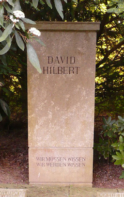

Quelques échos de Ginnungagap
Lionel Vidal
On ne trouvera rien de bien original dans ce morceau de la toile, Cette page a été mise à jour le 13 mai 2022. Elle comporte trois parties, mathématiques, professorat et autres passions. On pourra en trouver les fichiers sources et ceux de quelques outils informatiques sur GitHub. sinon quelques illustrations du très dominicain contemplata aliis tradere, et aussi, peut-être, quelques indulgences offertes à d’enfantines vanités.
Mathématiques

Épitaphe pour un géant (Göttingen).
La conférence, dont les magnifiques derniers mots composent cette
épitaphe, fut en partie enregistrée à la radio et cette voix
affirmant le credo du mathématicien est toujours émouvante :
…Wir dürfen nicht denen glauben, die heute mit
philosophischer Miene und über-legenem Tone den Kulturuntergang
prophezeien und sich in dem Ignorabimus gefallen. Für uns gibt
es kein Ignorabimus, und meiner Meinung nach auch für die
Natur-wissenschaft überhaupt nicht. Statt des törichten Ignorabimus
heiße im Gegenteil unsere Losung: Wir müssen wissen, Wir werden
wissen.
Wir müssen wissen, Wir werden wissen.
The true spirit of delight, the exaltation, the sense of being more than Man, which is the touchstone of the highest excellence, is to be found in mathematics as surely as poetry.
Voici quelques mises en forme de réflexions ou de notes de lectures diverses, mathématiques récréatives et exercices d’écriture souvent nécessaires pour fixer la mémoire et assurer la compréhension :
Professorat
“It would seem that you have no useful skill or talent whatsoever,” he said. “Have you thought of going into teaching?”
Je vous parle d’un temps que les moins de cinquante ans ne peuvent pas connaitre, quand on proposait, au baccalauréat série C, une interpolation de fonction par un polynôme bi-osculateur (Nancy-Metz, 1982), le problème de Bâle (Aix-Marseille, 1981), le calcul d’une intégrale de Gauss (Liban, 1978), une détermination du point de Fermat-Torricelli par les complexes (Rennes, 1976), ou encore un calcul de probabilité de ruine avec ensemble de suites récurrentes (Paris, 1975).
On aurait pu proposer tels quels ces problèmes au CAPES externe de ces dernières années, de toute façon déserté, et encore aurait-il fallu tenir compte des deux exercices qui les accompagnaient, certes plus courts, mais parfois coriaces, et qu’il fallait aussi traiter dans les quatre heures que durait l’épreuve.
Comme l’a dit mon ami François, écrivain et professeur
navré d’une matière qui se meurt : plus d’acier,
plus de maths… Il nous restera le camembert et le cinéma
subventionné !
La conclusion s’impose d’elle même : il n’existe
plus d’élèves capables d’aborder de tels problèmes,
mais, cohérence bienvenue de la décadence, il n’existera très
bientôt plus de professeurs capables d’enseigner à ce niveau.
Rideau !
Autres passions ou passe-temps
Time is a drug. Too much of it kills you.
Le jeu d’échecs
Nostalgie… mon grand-père m’a appris à jouer il y a un demi-siècle dans un endroit comme celui-là…
Les blancs jouent et font nulle.
Que d’heures passées dans les méandres de soixante-quatre
cases, aux dépends des mathématiques, de l’écriture, de la
musique…
Premier coup de la dame noire ?
Je ne joue plus compétitivement, mais
les compositions échiquéennes,
ou échecs artistiques, m’enchantent toujours.
C’est un art à part et méconnu, même de
la plupart des joueurs. On y rencontre pourtant des chefs-d’œuvre
inoubliables, comme ci-contre une étude de Genrikh Kasparian
(1949) ou un problème de rétro-analyse
de Luigi Ceriani (1943,
La Donna è mobile? … Eppur si muove!).
Ce n’est pas l’usage de donner immédiatement la solution d’une composition, mais la première rencontre avec un problème de rétro-analyse peut être déroutante : on démontre que la dame noire est issue de la promotion en a1 du point noir a7 et que son premier coup fut a1-a2, la dame noire originelle n’ayant pas bougé, capturée en d8 par un cavalier blanc !